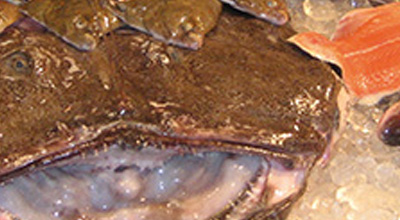
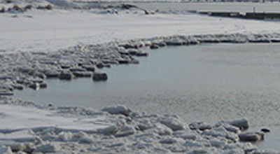
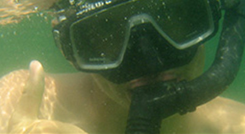
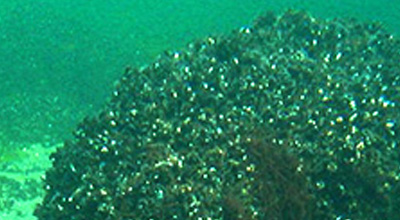

Welcome to Western Kullaberg.
- 1: Austrian Pine

This path, leading down to Åkersberget, meanders through a valley between boulders and rocky outcrops. At the edges of the valley there are dense thickets of blackthorn and elder, where large numbers of small birds often seek shelter. Everywhere in the valley there are large mature pine trees, often with twisted, curling trunks and cracked, greyish bark. The pine species that we see here is called Austrian pine (Pinus nigra) and was introduced on open land and in other windy locations along the Öresund coast in the late 19th century.
The tree is extremely resilient to wind and salt spray and was first recorded in the alpine areas of Austria. More recent research has indicated that the only natural occurrence of Austrian pine forest is in southern Italy. In any case, the introduction of the trees on the Öresund coast was a success. Large parts of Kullaberg were forested with fine specimens of Austrian pine during most of the 20th century. However, as a nature reserve, this area is only supposed to contain native species. This, together with the fact that the forests blew down during the latter half of the last century, means that the pine survives at only a few sites, such as here. The trees are a reminder of an earlier period in the history of the reserve.
- 2: Åkersberget / Lahibiagrottan

We are behind Åkersberget, a noticeably rounded promontory jutting out into the sea, which can be glimpsed to the south behind the bushes. The headland takes its name from a field (= åker) which was once here. It was abandoned and became overgrown, mainly with blackthorn bushes. On the other side of the fence, the bushes have been cleared and a pasture with fine meadow grass and flowers is emerging. Walk down the path to the side through the blackthorn thickets to the viewpoint above the vertical drop. The blackthorn has been sculpted by the wind into low, sweeping forms.
Once there, towards the westernmost point one can enjoy one of the best views of the rocky, indented coastal cliffs of Kullaberg. The inland ridges end in jagged promontories, and fragments remain in the water in the form of small inlets or sea stacks. The inlets between the promontories feature boulder beaches, which on Kullaberg are called'malar' (‘grinders’) since the stones make a characteristic grinding sound as they are rolled against each other by the waves. This also means that the stones are worn round and completely smooth.
The bedrock of the Kullaberg consists of gneiss, which has however been split both along and across the main orientation of the ridge. Magma has welled up in the cracks, forming the dark brown and black rocks amphibolite and diabase. When looking out over the coastline, one can easily observe this variation, with stretches of light red gneiss alternating with black-brown amphibolite cliffs. In addition, all the cliffs are black at and just above the waterline. This is due to the dark-coloured black tar lichen (Verrucaria maura). The tops of stones and rocks are often coloured yellow by for example common orange lichen (Xanthoria parietina), which thrives in the nitrogen-rich environment created by bird droppings. The sides of the stones can be coloured grey by Ramalina lichens, which thrive in the salt spray from the sea.
The sea also hollowed out caves in the cliffs during the'Littorina' period 5,000 years ago, when the sea level was roughly 10 m higher than now. Directly below us lies the Lahibia Cave, 6 m deep, which can be reached by climbing down at the signpost at the top of the cliffs to the right. Several smaller caves lie close by. Halfway out towards the lighthouse, behind the black promontory, lies the Silver Cave, which was created by quarrying. In the 16th century, it was thought that the fragments of mica visible in the rock were silver, and attempts were made to extract it until it soon became evident that the assumption was false.
Continue walking along the Red Path. Shortly before the transition to pasture, there is another side path leading down to Åkersberget and Åkerslån, a small inlet reaching far into the hillside. Coal was once unloaded in this inlet. It was then carried, often in large pieces, up to the lighthouse along the road which is now a path – truly exhausting work. Scuba divers can start from the inlet and follow a series of markers on the underwater drop-off, showing very clearly the development of the typical bands of organisms at different sea depths.
- 3: Oak Woods / Igla Bog

We are now on what was previously a large grazed heathland in the westernmost part of Kullaberg near Igla Bog. Until the 1960s, the area was the site of a planted forest of Austrian pine, which was blown down by a series of severe storms. It was then re-planted with oak, because this species can be considered native to north-western Skåne. (See more information under section 9).
The oaks are to some degree mixed with birch, which sets itself naturally on this type of land. However, the planted area will not be allowed to develop into a forest: in the future it will constitute part of the pasture land now established at Western Kullaberg. Livestock are allowed to enter the woodlands to graze, and it will be thinned out in stages. The result will be an open pasture with occasional oak trees, a type of landscape which was probably common on the mountain before the large-scale felling that took place in the centuries following the 16th century.
Walking through the woods to the north, one arrives at Igla Bog, a stretch of wetland, surrounded by sallow and willow, with tall-growing species of sedge and wetland plants.
- 4: Hagetorn Hill

Until the 1980s, a tall, dense forest of Austrian pine grew here, with only the highest tops and a few clearings closer to the sea being left open. Maps from earlier centuries show however that the high plateau used to be a large open heathland with occasional juniper bushes, used for rough grazing. In the latter 19th century, Austrian pine was planted here, and in the 20th century it gradually formed a forest.
Inventories of the ground vegetation in the pine forest carried out in the 1970s showed that many species from the previous pastoral landscape survived in clearings and between the trees, which despite their large crowns still allowed some light to reach the ground. The idea arose to fell the pine forest and bring in grazing animals to restore the ancient heath. The plan was not realized until all the forest blew down in a series of severe storms in the 1980s. The windthrow was cleared and sheep were introduced. Later, the addition of Highland cattle proved more effective as regards promoting low-growing vegetation.
Today, the heath has been restored, and during your hike across the open spaces you can look out over the entire outer peninsula. The plant species of the former moorland are spreading in the dense grassy vegetation that was established when the trees disappeared. Initially, it was above all wavy hair-grass which took over, but other species on the increase now include heath bedstraw, tormentil, harebell, lesser stitchwort, bilberry and common heather, all species which thrived in the days when it was grazing land (Deschampsia flexuosa, Galium saxatile, Potentilla erecta, Campanula rotundifolia, Stellaria graminea, Vaccinium myrtillus, Calluna vulgaris).
Opening up the moorland also exposed to view the centrally located hill called'Stora Hagetornsbacke'. Its summit is occupied by a large glacial boulder deposited there during the last ice age. Around 1850, it was given the name'Kung Döses sten' (King Dolmen’s stone) and it became a sightseeing destination for tourists of the period.
- 5: Kulla Bog

Below the hill in a ravine lies Kulla Bog, or as it is traditionally called, Grällinge Mad (Grällinge Water Meadow). In fact it is neither a bog nor a water meadow - it is a lake of open water surrounded by a narrow strip of marsh, featuring wetland vegetation. Out in the water there are small patches of grey club-rushes and common cat-tail reeds (Schoenoplectus tabernamontani, Typha angustifolia).
In the mat of sphagnum moss and common haircap moss (Sphagnum spp, Polytrichum commune) and along the shore you can find various sedge species, as well as cottongrass, marsh cinquefoil, round-leaved sundew and marsh violet (Carex spp, Eriophorum angustifolium, Potentilla palustris, Drosera rotundifolia, Viola palustris).
- 6: Birch Woods

The birch is a pioneer tree, which by spreading its seeds migrates into all open land, often abandoned cultivated land, whether pasture or arable land or previously wooded. The small trees grow densely and form thickets. If left alone, these will thin themselves out and grow into birch woods. The birch as a species however is short-lived, averaging 75 to 100 years. This situation is exploited by the longer living tree species such as oak, beech, ash and elm, which gradually replace the birch and eventually dominate the climax forest vegetation.
On the old heathlands, the intensity of grazing varied from year to year. When the grazing pressure was low, birch could sometimes re-invade. In many cases, the birch was not all felled when grazing restarted, rather it was just thinned out and animals were let into the area. This gave rise to the wooded pastures with birch trees that were so typical of the ancient Swedish countryside. The advantages of retaining some birch trees on the land lay in improved water management, whereby the trees drained the ground at the same time as providing some shade to protect it from drying out in sunny weather.
In the western part of Kullaberg, grazing of the large open areas of moorland ceased at the end of the 19th century. Trees were planted in most fields, but certain areas were simply left. Where the soil was thin, heather-clad moor remained, sometimes with increasingly dense stands of juniper, while birch invaded on the better land. These areas have mostly been developed into birch woods through clearing and thinning. One such area can be seen to the left of the path. On the other side, a slope leading down to Kulla Bog has been thinned and enclosed. Animals from the pasture to the west have been allowed in there, and thus a wooded pasture with birch trees is being developed – a semi-natural environment which has not been very common on Kullaberg.
The birches have now reached the end of their life-span, and they will gradually be replaced by oak, which is the natural climax forest species here. This will take place through a natural process or by planting oaks in certain areas.
- 7: Juniper Thickets

Juniper bushes (Juniperus communis) stand like high walls on either side of the path. Such tall, dense juniper thickets can be found in several places on Kullaberg, often developing on the tops of hills, where the soil was thin and which the livestock had avoided when it was grazing land. Nor were these places of interest for planting trees when grazing ceased. The result was that the juniper bushes gradually merged into tall, dense brush.
Because of the poor soil conditions, no other native tree species were able to colonise this land. The juniper bushes took over completely, except on some flat rocky areas practically free from soil, where small clearings can be found. It is only in these clearings that the heather, grass and herbaceous plants from the old heaths have survived. Nearly all ground vegetation dies off underneath juniper bushes. A mat of brown needles is usually all one sees, but one can find patches of low-growing moss, and sometimes the long striped leaves of wavy hair-grass.
Small migratory birds used these extremely dense thickets for shelter. The more permanent inhabitants which stay to breed in the juniper thickets include red-backed shrike, common whitethroat, lesser whitethroat and linnet (Lanius collurio, Sylvia communis, Sylvia curruca, Acanthis cannabina).
The juniper thickets otherwise feature very few species. It is difficult to open up these areas by thinning. If you take out some bushes from the stand, the result is that you have a lot of bare trunks and brown lower branches, with greenery remaining only on the tops, somewhat as we see along the path here. If you want to restore the grazing land, you have to cut down or burn off the entire stands. Fires have occurred naturally here, but it has turned out that it then takes a long time for the plant species of the previous pasture land to recolonise. Even juniper bushes find it difficult to return, in fact.
- 8: Kullagården Viewpoint

What a panorama from this place! It shows all the most important features of the historical cultivation patterns which have created today’s landscape. The place where we are standing is a relic of the old heathland with junipers, with open views over the heather moors and rough grassland westward towards the lighthouse.
If we look out over this landscape, we see large green fields extending over the hills from Öresund in the South to Skälderviken to the North. On the edge of the forest opposite stands the little farm of Kullagården, which for centuries has been the centre of tillage farming in the western part of Kullaberg. The green fields, nowadays a golf course, used to belong to the farm and were called'calf meadows'. The golf course has actually meant the preservation of the open character of the landscape. In the middle of the 18th century, the beech woods behind the farm were much more open, and pigs were probably left to forage here for beech-nuts. There were smaller enclosed fields for tillage or for hay to be saved for animal feed in the winter. The trees have since closed in to form a continuous beech wood, which gives way to oak woods near the sea. Farthest away, we glimpse the contours of Norra Ljungås, one of the reserve's highest points. A few centuries ago, an imposing grazed heathland began here and extended over all the high ground to the east, as far as the clumps of beech woods surrounding Björkeröd, Himmelstorp and Haga in distant Arild. Pine forest was planted in these open areas in the latter part of the 19th century. It was not until recent years that the forest around Norra Ljungås was felled to make room for the pastures which are now being restored.
Kullagården – itself a piece of history
In the Middle Ages this area was part of the kingdom of Denmark. Owing to the need to keep the lantern lit in the lighthouse out on the end of the peninsula, from 1564 onwards the farm was leased rent-free in return for tending the lantern, and was called Lyktegården (the Lantern Farm). In the same period, a scheme was proposed to extract silver from the cliffs (see Section 2); a forge was to be built at the farm and a metal-worker was to be housed at the farmhouse. However, this plan soon had to be abandoned, although the leaseholder’s responsibility for the lighthouse continued right into the 18th century. The famous Swedish naturalist Linnaeus visited Kullagården on his travels in Skåne in 1749 and gave a highly favourable account of the farm. Around 1800, the farm was divided into two and'New Kullagården' on the west side came into existence. The division lasted just a few years, after which the reunited farm was worked by Gustaf Elfversson. Together with his wife he began to receive tourists on the farm, creating walking routes on the hills and successfully marketing the area's attractions with the help of the photographer Peter Lundh. Owing to financial difficulties, he had to hand over the farming to Krapperup in 1872, but he and his wife remained living there and continued to develop tourism in the area. New Kullagården also became a hotel and inn, a business that survives to this day in the form of a combined inn and clubhouse. By the year 1900, Mölle and Kullaberg were among the major tourist destinations in Europe, attracting above all visitors from Germany. Both Elfversson and his successor as leaseholder of Kullagården established and ran some of the biggest hotel facilities in the region: Hotell Elfversson (now Bella Vista), Grand Hotel in Mölle and Rusthållaregården in Arild.
In 1914, Kullagården was acquired by Kullabergs Natur, a limited company linked to Lund University. The area thereby came to be managed as one of the first nature reserves in Sweden. It was formally designated a nature reserve in 1971 and was purchased by the Swedish Environmental Protection Agency for the Swedish state in 1997.
- 9: Oak Scrub

Kullaberg is part of a swathe of species-poor oak woods running across Jutland in Denmark to Sweden’s west coast, northern Skåne, Blekinge and the Baltic coast of Götaland. The oak (Quercus robur, Q. petraea) is the native tree which is naturally most at home on Kullaberg. It occurs on the steep slopes in a special type of forest called 'oak scrub'. The most typical oak scrub is found on the south-facing slopes between here and Mölle, but they also appear on the northern slopes of Kullaberg, often in combination with other tree species. Here there is also an element of ash on the wetter ground.
The trees are low-growing, the trunks often twisted and the tree-tops stunted and shaped by the sea winds. Honeysuckle, common ivy and blackberry (Lonicera periclymenum, Hedera helix, Rubus fruticosus) thrive in the understorey, and on the ground the vegetation is mostly rich in herbaceous species thanks to the generous amount of light the trees let through. Plants preferring plenty of light include greater stitchwort and wood meadow-grass (Stellaria holostea, Poa nemoralis). Other grasses present include wood melick, bearded couch-grass, and false brome (Melica uniflora, Elymus caninus, Brachypodium sylvaticum), while colour is provided by herbaceous plants such as yellow archangel, bitter vetch, dog’s mercury, solomon’s-seal, wood sanicle and various violets (Lamiastrum galobdolon, Lathyrus linifolius, Mercurialis perennis, Polygonatum multiflorum, Sanicula europaea, Viola spp). Around the open edges of the woods, orchids bloom in early summer, above all the early purple orchid (Orchis mascula).
The oak scrub on south facing slopes also hosts a large number of insects. Many of the insect species have their main distribution farther south and are rare in the rest of Sweden. Among the spiders here we find the purseweb spider (Atypus affinis), which ambushes its prey rather than trapping it in its web.
The most interesting fact about this oak scrub is that it has probably existed on these slopes ever since they were first colonised by trees. One can assume that neither humans nor animals were able to reach the young plants out on the steep slopes, and left them untouched. Investigations of the micro-life in the soil beneath the trees also show a species composition which indicates that the habitat has existed for a very long time. Thus, there is good reason to believe that parts of these oak woods are'virgin forest', something extremely rare today and in Skåne perhaps found only here and on the slopes of the Söderåsen ravines.
- 10: Ransvik

From the golf course down towards Ransvik, a shallow ravine runs, with Ransvik stream running along it. The stream carries a limited flow of water, but it is enough to sustain an interesting insect fauna. The moist ground on the slopes leading down to the stream is rich in nutrients and covered by a green mat of ramsons (Allium ursinum), whose white blooms appear in late spring. The ravine was previously shaded by large elm trees, but practically all of these died of Dutch elm disease.
They are being replaced by ash trees, which will probably take over in time, together with a number of old oaks. On a previously open field between the ravine and the road down to Ransvik, another stand of ash has developed into a wood. Down on the shore lies Ransvik, formerly a harbour where coal for the lighthouse was unloaded, and today the site of a bathing place and a restaurant. It was here that'sinful' bathing flourished during the tourist era around 1900: women and men bathed together, something which had not been accepted formerly and which attracted large numbers of visitors.
- 11: Beech Woods above Ransvik

Up on top of the ridge, the oak woods of the steep slopes give way to beech woods. The beech trees, their trunks like the columns of a cathedral, create an impressive space under their canopies, in spring bathed in delicate, light greenery, in summer dark green and in autumn flaming yellow. In a way, the beech woods have become the characteristic vegetation both of Kullaberg and Skåne as a whole. Here above Ransvik, the ground is covered with wood anemone in spring, while in summer, other flowers such as wood melick, wood meadow-grass, wood stitchwort, woodruff, early dog-violet and yellow archangel take over (Anemone nemorosa, Melica uniflora, Poa nemoralis, Stellaria nemorum, Galium odoratum, Viola reichenbachiana, Lamiastrum galeobdolon).
This type of beech wood, rich in herbaceous species, gives way on nutrient-poor land to so-called'upland beech woods', where the ground covering in the summer is mostly brown leaves with patches of grass (most commonly wavy hair-grass). Such nutrient-poor beech woods can be seen further along the path closer to Josefinelust on the hills above the car park.
It is interesting to note that there are many indications that the beech woods of both Kullaberg and Skåne as a whole are the result of farming practices. In previous centuries, the beech was favoured over other tree species because of the beech-nut's importance for foraging pigs. In tax assessments, a beech wood was valued in terms of the numbers of pigs it would support, thus'a 20 pig beech wood'. The beech woods between Ransvik and Josefinelust is marked on 18th-century maps as an open woodland, probably used for foraging and hay-making. Certain open areas were even used as fields. There are low stone walls in hollows which may have been built as shelter for the pigs.
Something else which indicates that the beech was specially favoured is the fact that when today’s beech trees die and fall, they are seldom spontaneously replaced by beech, it is other tree species which fill the gaps. Especially in damp places, there is a tendency for ash to take over as beech disappears. The presence of oak would also be natural in view of the geographical location.
Farther ahead there is a side path bearing the sign'Kullamannens grav' (Grave of the Kulla Man), which leads up to a high point in amongst the trees. If you walk up there, you will find some stones which were given this name during the tourist era around 1900 and which became an attraction for the hikers of that period in the same way as'Kung Döse (King Dolmen)' (see Section 4).
- 12: Deer Park on Lighthouse Road

We have now arrived at the big'Lighthouse Road'. Just to the east, where the woods end, there is open grassland. This site was previously (1936-2005) an enclosure for red deer, the provincial emblem of Skåne. The old house opposite on the other side of the road was originally a croft, and in the 20th century was named the Deer Cottage. Along a road skirting the edge of the grassland, there is another row of houses called Kullahusen (The Kulla Houses). Some of them were originally the cottages of labourers at Kullagården farm, but a number of holiday cottages have been added.
Below the large'Lighthouse Road' on the way to Mölle, right where it curves, there is a small lake surrounded by wetlands between low hills. Studies of the sediment and peat layers here indicate that this place may have been the first in Scandinavia to emerge from the melting ice 17,000 years ago. The sea level was much higher at that time because the weight of the ice cap pressed the land masses down.
In the other direction along the big road, the'Yellow Trail' curves in towards a large clearing where there is a car park. Most tourists coming to West Kullaberg today carry straight on towards the lighthouse at the outermost point. In the mid-19th century, when tourism on Kullaberg was in its infancy, this was the most important assembly point. The farmer at Kullagården, Gustaf Elfversson, who rented out farm accommodation to tourists, prepared the place and built a path northwards along Möllebäcken Hill, which continued by means of steps down the cliffs to Möllebäcksmal. Up on the edge he built a number of viewpoints. He was particular about orderliness and it is said that he raked the path every Saturday. After a visit by Queen Josefine, the consort of King Oscar I, Elfversson christened the area Josefinelust. To this day there are many visitors who stop here for their first glimpse of the cliffs, rocks and caves of the northern shoreline.
- 13: Josefinelust Cliffs

Another characteristic section of the craggy Kullaberg coastline with its promontories, boulder beaches and caves, this area is easily accessible through a ravine which gently slopes down towards the sea. Along a small stream at the bottom of the ravine there is a path with steps constructed in the mid-19th century.
At the top there is extremely sparse herbaceous vegetation in the oak scrub to the east and the beech woods to the west. In the valley by the stream we find tall vegetation with many species of grass and wildflowers, such as tufted hair-grass, reed canary grass, meadowsweet, wild angelica, purple-loosestrife, water avens, red campion and ground-ivy, and also the ferns male-fern and lady-fern. (Deschampsia cespitosa, Phalaris arundinacea, Filipendula ulmaria, Angelica sylvestris, Lythrum salicaria, Geum rivale, Melandrium rubrum, Glechoma hederacea; Dryopteris filix-mas, Athyrium filix-femina).
The gneiss bedrock is criss-crossed by seams of amphibolite and diabase. Down on the shore line, one can find a brown diabase called'kullaite', which only occurs on Kullaberg.
The eastern cliff features an easily accessible and much visited cave,'Josefinelustgrottan', which has formed in a rock crevice and is about 5 m deep. At the top of the steps behind the cliff we find a smaller cave,'Lilla Josefinelustgrottan', formed in a seam of kullaite and whose entrance is only 1 m high. Both in this cave and in a third cave slightly west of Josefinelust, King Fredrik VII’s cave, traces have been found of hearths, soot and charcoal, as well as of bone implements and worked flint. This shows that the caves were used as early as the Stone Age, although not as dwelling places. Bone remains show that the inhabitants fished for cod, haddock, spiny dogfish, plaice and eel. They also collected sea mussels and whelks. The remains found also included the bones of whales, porpoises and seagulls.
- 14: Cliff-top Woods

The trail here passes above a wooded part of the northern cliffs. The land here contains a broad seam of greenstone. The greenstone mineral is called amphibolite and weathers easily, releasing plant nutrients. The vegetation becomes rich in herbaceous species. The ground is covered by ramsons and nearby one can find dog’s mercury, Suffolk lungwort, yellow archangel and wood stitchwort, and in spring wood anemone, liverleaf, spring pea and the large red-violet bird-in-a-bush. (Allium ursinum, Mercurialis perennis, Pulmonaria obscura, Lamiastrum galeobdolon, Stellaria nemorum; Anemone nemorosa, Anemone hepatica, Lathyrus vernus, Corydalis cava).
The woods here contain a large assortment of deciduous trees: oak, elm, ash, maple and lime, as well as the occasional beech. This kind of mixed woodland on steep ground, often in ravines with fallen boulders, can be found in many parts of Europe and is considered especially valuable in the EU network of protected areas, Natura 2000. On the northern slopes of Kullaberg, this forest type is strongly affected by the wind. As it creeps down the slope, a dense, low-growing thicket develops, with a good few lime trees. It is easy to find this thicket by taking the path down to Käringmalen, which begins here. It is fairly steep, but there are steps. It is worth the effort, because once down at Käringmalen, you are on a beautiful sheltered boulder beach, surrounded by the jagged black amphibolite cliffs, which also form promontories and stacks out in the sea. Käringmalen (The Old Woman's Rocks) is named after a black woman who was abandoned on this desolate shore when a sea captain who had taken her on his ship grew tired of her. She was eventually rescued by local people.
- 15: Ablahamn

An open valley with good soil formed from the underlying amphibolite rocks leads down to a broad stretch of the shoreline called Ablahamn. This shore is easily accessible and the path links the traditionally used boat mooring with Nya Kullagården farm above here. The farm now serves as an inn and clubhouse. The cultivated land around the farm formerly extended right down to the boulder beach in the form of a sloping marshy meadow.
The meadow has not been farmed for a long time, but some plant species from that period remain: meadowsweet, reed canary-grass, wild angelica, water avens, yellow loosestrife among others (Filipendula ulmaria, Phalaris arundinacea, Angelica sylvestris, Geum rivale, Lysimachia vulgaris). Some plants such as cleavers and nettles (Galium aparine, Urtica dioica) indicate the effects of fertilisation. The area is becoming overgrown with ash, alder and sallow.
Along the edges of the species-rich oak woods which run eastwards across the valley, and along the path leading up to the farm, there are abundant stands of perennial honesty (Lunaria redivida). Their violet-blue flowers put on a dazzling display in the early summer greenery, while the decorative seedpods, like flattened translucent pea-pods, decorate the undergrowth in both autumn and winter. The species is uncommon in Sweden but is at home in slightly damp, nutrient-rich deciduous forests farther south in central Europe. In recent years the species has also spread to other valleys on Kullaberg, including the descent towards Mölle on the'Italian road'.
The verdant valley with its babbling brook descending towards Ablahamn may be one of the earliest inhabited places in the region. Excavations have revealed several archaeological layers with the remains of dwellings from the late Stone Age (c. 5,000 years ago). Unusually, local stones were used for making tools instead of flint. Finds include'funnel beakers', round clay vessels with a funnel shaped neck such as are still made in East Africa today.
- 16: Visit Cave / Visitgrottan

In places, Kullaberg’s northern cliffs drop sheer into the sea. The height here is around 50 m, but further east it's more than 100 m. Open areas with rocks and areas of moorland alternate with thicket and invading brush. This moorland habitat is different from the south facing slopes and hosts species which thrive in a cool damp'Atlantic' climate: heather, bilberry, black crowberry, dwarf cornel and various ferns (Calluna vulgaris, Vaccinium myrtillus, Empetrum nigrum, Cornus suecica, Dryopteris dilatata, Dryopteris filix-mas).
In both cases – be careful – do not go too near the edge. The cliffs are very dangerous!
Occasional lime trees and oaks give way to an invasion of tall brush comprising aspen, sallow, rowan, blackthorn, rosehip, elder, guelder-rose etc (Populus tremula, Salix caprea, Sorbus aucuparia, Prunus spinosa, Rosa spp., Sambucus nigra, Viburnum opulus).
There is often an uninterrupted view of the sea and after storms and strong winds seabirds appear from far out in the Atlantic: gannet, fulmar, kittiwake and Manx shearwater (Sula bassana, Fulmarus glacialis, Rissa tridactyla, Puffinus puffinus). Other specialised seabirds found here include razorbill, common guillemot and black guillemot (Alca torda, Uria aalge, Cepphus grylle), which nest on the skerries below the cliff. Further east, on a ledge on the high cliffs, the peregrine falcon (Falco peregrinus) also nests - a spectacular bird of prey which has returned to Kullaberg after many years’ absence.
Right beneath us lies one of the bigger caves in the cliffs, Visitgrottan, almost 10 m deep, just as wide, and with a ceiling height of 6 m. You can get down to the cave by a fairly steep path near the signpost. It is not always possible to reach the cave, as the access is cut off at high tide. The name of the cave comes from the early 20th century when tourists left their visiting cards in the cracks in the walls.
Much of the upper areas of the north facing slopes have become overgrown by bushes and trees. The path continues some way up in the trees and the cliffs are not so visible. You can get down to them by walking past the tables and chairs at the far end of the car park and taking any of the small paths out towards the cliffs. Note the windswept birches, similar to those found in Sweden’s upland regions. Another way to see the cliffs is to walk on from the next information board along the eastern edge of'Kullalå' out to the edge.
- 17: Kullalå / Palnatoke

This is one of the deepest and steepest ravines leading from Kullaberg to the sea. At the bottom, there is a small rocky area and a marshy meadow which is mostly in the shade. The sea inlet is called'Kullalå' and despite the cliffs all around it has been used as a landing place for boats. In a description from 1825 it says that'the Devil’s Ravine is an abyss with vertical walls, in which the sea, frothing and green, storms in'.
During the tourist boom around 1900, Danish tourists christened the cliff opposite this place'Palnatokes skränt (Palnatoke’s Cliff)'.
Legend has it that Harald Bluetooth, son of the Danish king Gorm, travelled to Kullaberg together with Palnatoke, the chieftain of the island of Fyn, in order to go skiing. Palnatoke considered himself a better skier than King Harald, who angrily forced Palnatoke to ski down the most dangerous of the cliffs. After what was practically a free fall, Palnatoke landed at the bottom of the cliff - in one piece! (The legend features in A. Oehlenschläger’s tragedy'Palnatoke').

Welcome to the Kullaleden Trail, marked with orange, taking you forward step by step.
- About Kullaleden
Kullaleden is one section of the Skåneleden trail SL 5 around the Kullahalvön peninsula from Helsingborg to Utvälinge via Kullaberg. Kullaleden is 70 km long, and offers a great variety of experiences along the way. Here you find everything including the medieval city centre of Helsingborg, beautiful views over the straits from the plateau heights, the well-known Sofiero Palace, Kulla-Gunnarstorp and Krapperup Estates, beaches and picturesque seaside villages, and Kullaberg’s dramatic cliff formations. Kullaleden is certified according to the European Ramblers’ Association’s (ERA) criteria for being a Leading Quality Trail. This entails a quality assurance of the trail’s physical standard as well as the experiences and services along the trail.
Kullaleden.se Skaneleden.se EURORANDO Kullaleden: Certified Leading Quality Trail Skåneleden SL5 Street View - A: Josefinelust / Our Responsibility 
Since prehistoric times, the sea has been a valuable resource. We have over-utilised the sea for a long time. Now we understand that we need to do more to keep the sea healthy. Trends are changing and we are now well on the way, each doing their part.
The burden of nutrients entering the sea is decreasing; shipping is becoming cleaner; an increasing number of wetlands are being created and awareness is increasing among people in general.
- B: SadeIn / Rocky Bottoms 
Many marine species require genuine salt water. In the coastal waters of Skåne we find these creatures only in the northern part of Öresund and in the Kattegatt, above all at Kullaberg. Below the pycnocline boundary out at the Kullaberg rocks, it is dark and cold but abundant in fauna in beautiful colours.
Kullaberg is the southernmost outpost of the purely marine species – further south the water is too brackish. At Kullaberg we find coral species – corals are animals not plants.
- C: Arild / Sea Plants

Plants are crucial to life in the sea. With the help of sunlight, plants transform carbon dioxide into energy-rich plant material, and they create oxygen. There are two different types of plant in the sea: flowering plants, which have roots and grow in soft bottoms, and Kelp which grows on hard bottoms, attaching itself with the help of a holdfast.
Large perennial algae such as Bladderwrack and Toothed wrack are important to the ecosystem.
- D: Skäret / Swimmer's Bay

The Swimmers’ Bay
The food store and nursery of the sea.
Shallow bays are highly productive. A lot of nutrition comes here from land and the spring sun quickly warms the shallow water. On a fine April day, while it is still 5-6 °C out at sea, it can be 10 to 15 °C near the shores. At a depth of 1m, biological production can be 10 times greater than at 10 m deep.
April - Brown shrimp and Littoral crab come in from deeper water.
May - Hundreds of small juvenile plaice drift in from the spawning grounds out in the Kattegatt.
June - There is a veritable invasion of Blunt gapers, cockles and sea mussels.
July - Newly hatched Brown shrimp and Littoral crab drift in to the bay on the current.
Autumn - In the autumn when it becomes cooler in the water, the fish, crabs and shrimp disappear to deeper water.
Winter - In winter there is calm in the swimmers’ bay.
- E: Svanshall / Skälderviken

The whole of Skälderviken is an important area for life in the sea. Some areas are protected as nature reserves or are Natura 2000 areas.
Skälderviken is a spawning area for herring and is an extremely important breeding area for flatfish such as European plaice and Common dab. Other commercial fish species such as Cod, Lumpsucker and Eel hunt their prey here.
In the same way, the Eider and other diving ducks find important nutrition here. The bay is home to both seals and porpoises.
- F: Jonstorp / Skälderviken 
Skälderviken is a bay on the Kattegatt. The area features genuine salt seawater and, via Öresund, the brackish water of the Baltic Sea. This fact means that the exchange of bottom and surface water is made more difficult, which can lead to a shortage of oxygen (hypoxia) on the seabed. The risk of oxygen shortage increases further when too many nutrients from land flow into the bay.
- G: Häljaröd / Sea Meets Lands

The coastline is a unique area which is affected by what happens both on land and in the sea. Today this area is hotly discussed due to the rising sea levels.
The shores along Skälderviken are varied, from sandy to rocky. Farthest inside the bay there are white sandy beaches, while the opening to Kattegatt comprises rocky shores on both sides. Kullaberg rises in the south, a primary rock of horst offering high, steep shores.
- H: Utvälinge / Coastal Waters 
We know today that waters along the coasts are of considerable importance to all sea life. No two stretches of coastline are identical. We find cliffs, cobblefields, gravel, sand and clay. The properties of water range from somewhat brackish to the east to genuine seawater to the west. We therefore have a greater abundance of species to the west, while the Baltic Sea has a unique mix of saltwater and freshwater species.
- I: Mölle / Coastal Waters

No two stretches of coastline are identical. We find cliffs, cobblefields, gravel, sand and clay. The properties of water range from somewhat brackish to the east to genuine seawater to the west. We therefore have a greater abundance of species to the west, while the Baltic Sea has a unique mix of saltwater and freshwater species.
The form and shape of the landscape create different conditions for animals and plants, both above and below the sea surface. Rock bottoms have their populations and soft bottoms have theirs.
- J: Nyhamnsläge / The Porpoise

The common porpoise Phocoena phocoena.
The only whale to constantly inhabit Swedish waters, the porpoise is endangered and red-listed. However, in Skälderviken and the north of Öresund there is still a good chance of seeing a porpoise.
The Smallest Whale
The porpoise grows to approximately 170 cm. The primary way to recognise a porpoise is the low, triangular dorsal fin.
An elusive deep diver When necessary, porpoises can dive to a depth of 240 meters.
- K: Strandbaden / Swimmer's Bay
The Swimmers’ Bay – the food store and nursery of the sea. Shallow bays are highly productive. A lot of nutrition comes here from land and the spring sun quickly warms the shallow water.
On a fine April day, while it is still 5-6 °C out at sea, it can be 10 to 15 °C near the shores. At a depth of 1 m, biological production can be 10 times greater than at 10 m deep.
- L: Höganäs / Sea Plants

Plants are crucial to life in the sea. With the help of sunlight, plants transform carbon dioxide into energy-rich plant material, and they create oxygen. There are two different types of plant in the sea: flowering plants, which have roots and grow in soft bottoms, and Kelp which grows on hard bottoms, attaching itself with the help of a holdfast.
- M: Lerberget / The Harbour Seal

The Harbour seal is found on the Swedish west coast, as well as in two small colonies in the Baltic Sea, at Måkläppen and in the Kalmarsund Strait. The seals we see in Skälderviken belong to the colony on the skerries at Väderö in Halland.
The male grows to about 170 centimetres and weighs about 100 kg, while the female, which is slightly smaller, grows to 160 centimetres, weighing around 80 kg. The colour is speckled grey.
- N: Domsten / Responsibility

Since prehistoric times, the sea has been a valuable resource. We have over-utilised the sea for a long time. Now we understand that we need to do more to keep the sea healthy. Trends are changing and we are now well on the way, each doing their part.
The burden of nutrients entering the sea is decreasing; shipping is becoming cleaner; an increasing number of wetlands are being created and awareness is increasing among people in general.
Welcome to the Sights of Heritage, marvels of Swedish culture and history with a rich and colorful past.
- 1: Kärnan Castle

Kullaleden and Öresundsleden merge at Kärnan, which is the last remnant of the Helsingborg castle. The 34 meter high tower from the 1300s is later replaced with a tower from the 1100s. This is where the Danish Queen Dorothea and Barbara Brahe from Krapperup met before a pilgrimage to Rome in 1475. The surrounding buildings were demolished following the war in the 1600s. A wall chart below Kärnan illustrates the earlier state of the site. In the 1800s the Swedish flag through the work of Alfred Hellerström received its battlements and is now hung now hung on top of Kärnan, which got it´s colors from Oscar Trapp. Trapp visited the National Museum in Amsterdam and managed to get a piece of a looted Swedish flag. Different manufacturers reproduced the colors differently and that´s how the bright colors were established.
- 2: Sofiero Palace

In 1905, Oscar II's grandchild Prince Gustaf Adolf, future King Gustaf VI Adolf, and his wife, crown princess Margaret received the palace as a wedding gift. They renovated the palace and started the large Rhododendron garden for which the palace is known today. Prince Gustaf Adolf become king in 1950 and until 1973 Sofiero was his and his second wife Lady Louise Mountbatten's official summer residence. It was supposedly the King's favorite place.
Prince Gustav Adolf and his wife Margaret had Sofiero as a wedding gift in 1905. The English-born Princess Margaret was very knowledgeable garden and gave the garden a prominent role. She believed that people would use fewer varieties, but many out of each and put the specimens closely together, something that still lives on, for example, in Blomstergatan that bears her name. Crown Prince Gustaf Adolf, whose main interest was the rhododendron garden continued work after Margaret's death, even after he was king. Approximately 10 000 copies of the rhododendrons attracts thousands of visitors every year, especially during the flowering period. On the castle's website you can learn the latest information on flowering. There are also descriptions of the hikes illustrating the royal summer life, gentry and servants, Sofieros flowers and the sculptures found in the park.
King Gustav VI Adolf bequeathed the entire plant to the city of Helsingborg which took over in 1974. The park, which in 2010 was named Europe's best park, is also used for outdoor concerts and other events.
- 3: Hittarp

In 1717 there was a military fortification in Hittarp. During World War II was considered Hittarp have a position that could be sensitive to a possible hostile attack. Parts of the village was then cordoned off and those who lived inside the barricades were showcasing special passports. Still, there are different types of armor left from Skåne Line, which got its popular name, Per Albin-line, for the then Swedish Prime Minister. (Image taken in Molle) At Serpentinvägen subterranean radar station shown at times. Its antenna sticking up among the treetops.
- 4: Gunnarstorp

The sea erosion that occured Below Kulla Gunnarstorp castle has affected the shoreline and because of this laid bare the sandstone ground, a reminder of when the sea level was 6-7 meters higher, approx. 4000-7000 years ago. The vertical sandstone ledges are saturated by water. The area is a nature reserve with beech wood, gullies and Bronze Age mounds and has been inhabited since prehistoric times.
- 5: Domsten

Helsingborg Camping Club’s operations were established in 1932 and are unique. It was initially all about camping, but in the 1940s, white Masonite cottages replaced the tents, and they are set up each spring. In the autumn the cottages are dismantled and the foundations are all that remains, the trail run through the area. At “Fornminnet” there is a bus stop along the forest slope for those want to start or end their hike. . The stop probably got its name due to the Bronze Age mounds and six Neolithic settlements recorded in the vicinity.
The name “Domsten” has nothing to do with law making. It occurs early as “Dompäng”, a wet meadow, which is situated inside “Domasten”. “Domp” derives from the German word “damp” which concerns mist and steam. Which “rock” (sten) the name refers to is unclear.
- 6: Domsten / Viken

A colony of harbor seals frequently spends time on the reef just northwest of the windbreak. Approx. 150 seals can be seen at the same time laying on the rocks or playing in the water towards the shore. Sea eagles appear sometimes on cold autumn and winter mornings. You can find Giant horsetail, equisetum telemateia, sea lyme-grass and European marram grass, growing on the dunes and wetlands.
The grooves emerged during the Neolithic period and were later appropriately laid by the shore. A strait separated the Kulla peninsula from Jonstorp to Viken.
- 7: Viken

Many foreign ships ran aground outside Svinbådan. There are tales of wreck auctions in the mid-1800s where large amounts of salvaged goods were sold. During the 1850s, life-saving stations were established around the district, among them where the ones in Viken (est.1857) and Svinbådan (est.1866). The lightship in Svinbådan was replaced in 1960 by the fixed beacon that you see along the hike trails.
Peder Wessel was an ennobled Tordenskiold, and was one of the many who sunk at Viken. In 1717, Peder Wessel was on his way from the Swedish coast to Copenhagen to explain to the King why he’d failed to take Strömstad. It has also been claimed that the ship’s chest was buried in the sand by the golf course at Viken. Several have looked, but no one has found it.
Many vessels have run aground along the coast. In 1850 the koff Jantina ran aground off of Viken and 80,000 pounds of damaged coffee was auctioned.
In 1851, 200,000 pounds of Java sugar, 200 quarts Batavia Arrac, cognac, rum, grain brandy, chicory were sold and the wreck of Louise on its way from the East Indies to Copenhagen.
- 8: Höganäs

The architect Cyrillus Johansson was hired when Höganäs was to install municipal water in 1932. Keep your eye on the water tower and walk into Hamngatan between a red timber building and a yellow house with brown eyebrows above the windows. The old bridge remains under the plot of land. The red building is now a private residence, but has housed both an inn and customs house. The building was moved here, probably from Helsingborg around 1800, and served as a"traveler’s inn".
- 9: Mölle

We’re now approaching Mölle and the residential area Gylleröd on the right. Mölle chapels stepped gable tower sticks out of the greenery in the summer. The artist Gunnar Valentin used local models in producing the altarpiece in the medieval-inspired chapel. The hill above the church is a sea of blue from early hepatica around spring. Göran Malmqvist wrote:
“Delightful music: Last year’s rustle of leaves as a comp to the hepatica choir”.
Mölle could have been an ideal landing site for a possible enemy during World War II. Defences were created in order to prevent this including blasting the harbor pier, if nothing else helped. Carved crosses on the edge of quay still mark the explosive chambers.
An engraved water-level gauge on Mågehallen indicates the water level. In addition to the graduations, the year 1750 and the initials AMS and AMA have been carved in. The military engineers A M von Strussenfelt and A M von Arbin had visited Mölle to investigate whether conditions existed to ship out stone to the citadel in Landskrona.
A water-level gauge is an instrument for measuring the water level. This particular water-level gauge may have been built as a part of the discussions in the 1700s about “the sea’s rising and falling”.
- 10: Solviken

We’ll soon arrive at Solviken. Here you’ll find proximity to ladies’ bathing and a children's pool. There used to be a pier for shipping stone from the quarry, which was below Barakullen. In a painting from 1867 you can see that the quarry made it impossible to walk further towards Ransvik. Kullabergs Natur AB was established through a collection in 1913 in order to prevent Kullaberg from being sold from Krapperup for industrial quarrying. Western Kullaberg is now owned by the Swedish Environmental Protection Agency, and has since 1971 been a nature reserve managed by the County Board. Accessibility has improved since stone quarrying stopped, however in the late summer and autumn, it’s beneficial to relax here. If you have the patience, you can find the rare Purseweb spiders where the male is about to enter the females burrow during winter.
After the sea-worn limestone pillar formation with spotted cat's ears that extend towards the crevices the trail will continue with high steps and paths along the cliff edge. Along the way you’ll find handles, handrails or ropes to hold on to. Current hiking terminology labels this route as medium difficulty. We are now up on Kullaberg and many hikers prefer using hiking poles, especially when walking downhill. In the side of the rock at the so-called Diamond Cliffs is a 15 metre wide amphibolite path.
- 11: Ransvik

As we approach Ransvik there is a powerful scent of wild garlic in late spring where the shrubland ends. Peter P Lundh is a photographer who made Ransvik widely known in the early 1900s with his postcards of bathing women and men in striped bathing costumes. The early “communal baths” caused the rumor “sin in Mölle”. You can take steps or a lift leading towards the summer open Ellen's Café, in the building from 1915, when going to the beach.
Our trail continues from the car park between the steps and Mölle golf course, but before that, we make a small detour to Janne's meadow and a hilly shortcut for those who want to return to Mölle.
The red-listed Purseweb spider, atypus affinis, belongs to the group tarantulas. It lives in a sock-like, silken retreat, which only protrudes a few centimetres above the ground. According to Lars J. Jonsson of Kristianstad University, there may be a few thousand spiders between bathing areas in Solviken and Ransvik. In 2013 the Purseweb spider was named “Best European spider”!
Fact - Krattskog is low growing, windswept deciduous forest.
Buskkratt is frequently a windswept tangle of bushes and trees. Between Solviken and Ransvik you can see how the sea winds have pushed the bushes and trees against the side of the cliff.
Höganäs museum has a copy of PP Lundh’s studio and owns his glass plates that have been digitized and are shown in a slideshow.
We are now on our way through the beech wood towards Janne's meadow. Before we arrive at the meadow we’ll pass a small fen where the grass is “mown” in the late summer. The flora contains both protected and red listed species, including the green-white orchid. Hedge woundwort, beech fern and artist's fungus are others found along Fägatan (a trail for cattle). Fägatan leads to the little croft which until the 1930s was leased and used by the crofter Janne Knutsson. Other crops that were grown were rye, barley, potatoes, turnips and swede. Trees were pollarded to produce “pollard hay” for the cattle. Previously heather was also dried as hay.
Fact - A meadow is a small field in a forest clearing, often fenced with a stone wall to keep out grazing animals.
- 12: Arild

We’ll now get a first glimpse of Arild. Stop for a while and look over the hillside towards Skälderviken. In accordance with the exhibition H55 in Helsingborg, a naval exercise took place here in Ladarp July 24th 1955.
A grandstand had been built for prominent visitors, including the then Swedish Queen Louise. She was one of 125,000 people who attended “Operation Kullen”, containing 47 different ships. There are photographs of the minesweeping, artillery firing and anti-submarine warfare in Höganäs municipality's photo archive.
The spectators arrived in 25,000 cars, which were parked in the fields to the south. The road from Ängelholm was one-way here - everyone was going in the same direction - so you could drive in double files. After the event the one-way traffic went in the other direction.
Svensmalen is along Klötesvägen, east of Arild’s harbor, where the young Arild's body was said to have left an imprint. To get to Arild’s bus stop you can climb up the steps at Purras hill.
- 13: Klötet

The nearest swimming area is Klötet, closely followed by an outdoor pool. Before we reach the next swimming area, we encounter a bear, gazing at the sea. This is one of the exciting sea-worn limestone pillars on this stretch. We are now inside “Lockens Grund” close to an old boat launching site. We’ll walk among grazing cows and sheep on former carriage roads. A popular location for outdoor weddings is a spot by a bench to the left. It was also here that Ingmar Bergman found a suitable environment in 1953 for scenes in the film Sawdust and Tinsel.
- 14: Arild - Skäret

These are the three burial mounds and a stone circle called Nabben or Stensnäs with Nabbahögarna. According to Cilla Banck the small building was constructed of granite in the early 1800s also known as “Mother Bengta’s” house. “It was a time of large herring fisheries, when 3 boats went ashore at Stenenäs. That was why mother Bengta from Kjöge built this little house, she spent her time selling coffee to the fishermen who ported here”. She baked cakes, sewed baby clothes and sometimes sat on a rock in the harbor and knitted sweaters and hats that she sold. The road between Arild and Skäret, near Nabbavägen was named after her (Mor Bengtas väg). Along the road is a bathing area maintained by the residential area of Stenedal.
We are passing through a country lane surrounded by fences and gates for grazing animals. The land is a remnant of the old Kulla pastures, which were the common pastures for Kullen. In the autumn you will often find the little fungus Parrot Waxcap, which at the end of its growing period fools the inexperienced to think that it is a coltsfoot. Below the central houses on the hill is a small fen with grass and sedge vegetation and various mosses in the bottom layer. The pebble beaches clearly show how high the shoreline has been at different times.
When the schooner Elida was launched it all went wrong, which was perhaps an omen. It was repaired and launched again, but faired no better and disappeared in 1879 on the North Sea with a six-man crew. The entire crew were unmarried except captain Lock, who had a family. One of the votive ships in Arild’s chapel is a copy of Elida.
Fact - The self-taught travelling teacher and chapel caretaker Cilla Banck (1830 - 1906) collected curiosity objects for a small “home museum” and she kept a diary of events in the area. Her residence next to the chapel is now gone and the objects have become scattered, but her diaries have been preserved.
- 15: Skäret

We’ll be approaching Skäret on a gravel road through a small scrubland area and after a pumping station. You can still winch boats down to the landing area in front of machine-gun post no. 776 and the subsequent bathing area. On the shore meadow you can see angelica, sea aster and sea plantain growing. Ivy-leaved toadflax, mullein, fern and forked spleenwort have their habitats on both sides of the harbor. The black tar lichen, verrucaria maura often forms black coatings on rocks out on the beach. We enter Skäret through Säldynevägen, named after a large flat stone, Säldynan. Säldynan is a favourite spot for seals.
Skäret is the youngest harbor of the former Brunnby parish and one of the younger in Kullabygden. The name simply means"rock". Initially boats were moored within a few hillocks, but in 1870 they started to build the harbor. Among others, stones, at least 25 centimetres thick, were dragged out in the winter and were laid on the ice, according to a well thought out plan, so that they fell down and formed the bottom of the harbor when the ice melted. Next to the harbor is Skäret’s art gallery, which is famous for being the smallest in the country. After ten years of exhibitions, the museum now takes in visiting artists, “artists in residence”.
The community first consisted of two parallel streets, Grönadalsvägen and Sofias väg, which was named after Sofia Persson. Sofia lived in the extended house at the eastern end of Grönadalsvägen. Sofia raised more than twenty foster children and her own daughter. Her husband, Olof, built the unusual one brick wall that we’ll get a glimpse of heading towards the windbreak.
After the settlement, a steep hill with twelve iron-shod steps leads up to the summer cottage area at Plidehallsvägen.
At Tvättehallsvägens end you can find Svanshalls other bathing areas whose stone outcrops exhibit fossils of sea urchins.
- 16: Rekekroken

The most interesting part in Renekrok is situated below Gustav's place at the water's edge - the Cambrian quartzite. This is one of the few places in Sweden where it is exposed, but the whole community rests on 400 - 600 million year old foundations. In the Litorinavallen above there are quartzites in a disintegrate state. The picture was taken in 2014.
But the community is quite young. During the latter part of the 1800s many farmers moved out of their fishing huts during the herring season, and eventually the “sailor fisherman” settled on the farmers' common property, the beach gravel.
- 17: Jonstorp

Many findings from the Stone Age have been made in Jonstorp and the older neighbouring village Görslöv. The Jonstorp area is one of the most important locations in Sweden for those who want to study coastal Neolithic cultures. The initiator of the excavations was Oskar Lidén (1870-1957), who served as headmaster at the elementary school in Jonstorp 1909-1919. His activities are still based for modern-day archaeologists. The library in Jonstorp, at Lidéns plats, houses a part of the stone collection he donated to a small Stone Age museum. Grateful Jonstorp villagers and students honored him with a bronze plaque by Helsingborg artist Folke Svensson, also now in the library. Several streets in the residential area on the former mill hill have names that are associated to him and his finds, for example, Lidéns väg and Fornminnesvägen, where the sea wall was covered with Neolithic finds.
The sandy beach is shallow and therefore ideal for families with small children, perhaps one reason why the summer cottage settlement was established here in the 1930-1940s beneath the old farms. The sand dunes are two-three metres high and are bound by grass and sand sedge. On the narrow coastal heath endangered plant species such as adder's-tongue, cross-leaved heath, common moonwort and lesser butterfly-orchid intermingle with much more common plants.
In mid-June, we found a number of species adjacent to the beach: tufted grass, early marsh orchid, silverweed, mouse-ear hawkweed, white clover, thrift, blue bonnets, bird's-foot trefoil, meadow pea, and hop trefoil, common rush, grey hair-grass, German knotweed, English plantain, orchard grass, wild angelica, marsh and creeping thistle as well as the lesser butterfly-orchid in an area of just a few square metres.